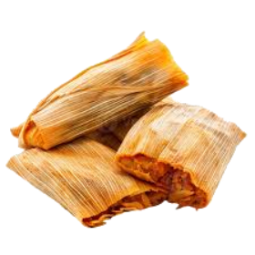

Tamales have been a staple in Mexican cuisine for thousands of years, dating back to the Aztecs and Mayans. These delicious, portable meals are made from masa (corn dough) and filled with meats, cheese, or vegetables, then wrapped in corn husks and steamed. Traditionally prepared for celebrations and special occasions, tamales continue to be a beloved dish across Latin America. Want to make authentic tamales at home? Follow this step-by-step recipe:
How to Make Authentic Tamales
Ingredients:
- 2 cups masa harina (corn flour)
- 1 1/2 cups warm vegetable or chicken broth
- 1/2 cup vegetable oil or lard
- 1 tsp baking powder
- 1/2 tsp salt
- 1 1/2 cups shredded chicken, pork, or vegetables
- 1 cup salsa or mole sauce
- 12 dried corn husks (soaked in warm water for 30 minutes)
Instructions:
1. Prepare the Masa Dough:
In a bowl, mix masa harina, baking powder, and salt. Add vegetable oil or lard and warm broth. Stir until the dough is soft and spreadable.
2. Prepare the Filling:
Mix shredded chicken, pork, or vegetables with salsa or mole sauce for extra flavor.
3. Assemble the Tamales:
Lay a soaked corn husk flat. Spread a thin layer of masa dough in the center, then add a spoonful of the filling. Fold the sides of the husk inward, then fold the bottom up.
4. Steam the Tamales:
Place tamales upright in a steamer and cook for about 1 to 1.5 hours. They’re ready when the masa easily pulls away from the husk.
5. Serve and Enjoy:
Let the tamales cool slightly before unwrapping. Serve with extra salsa or toppings of your choice.